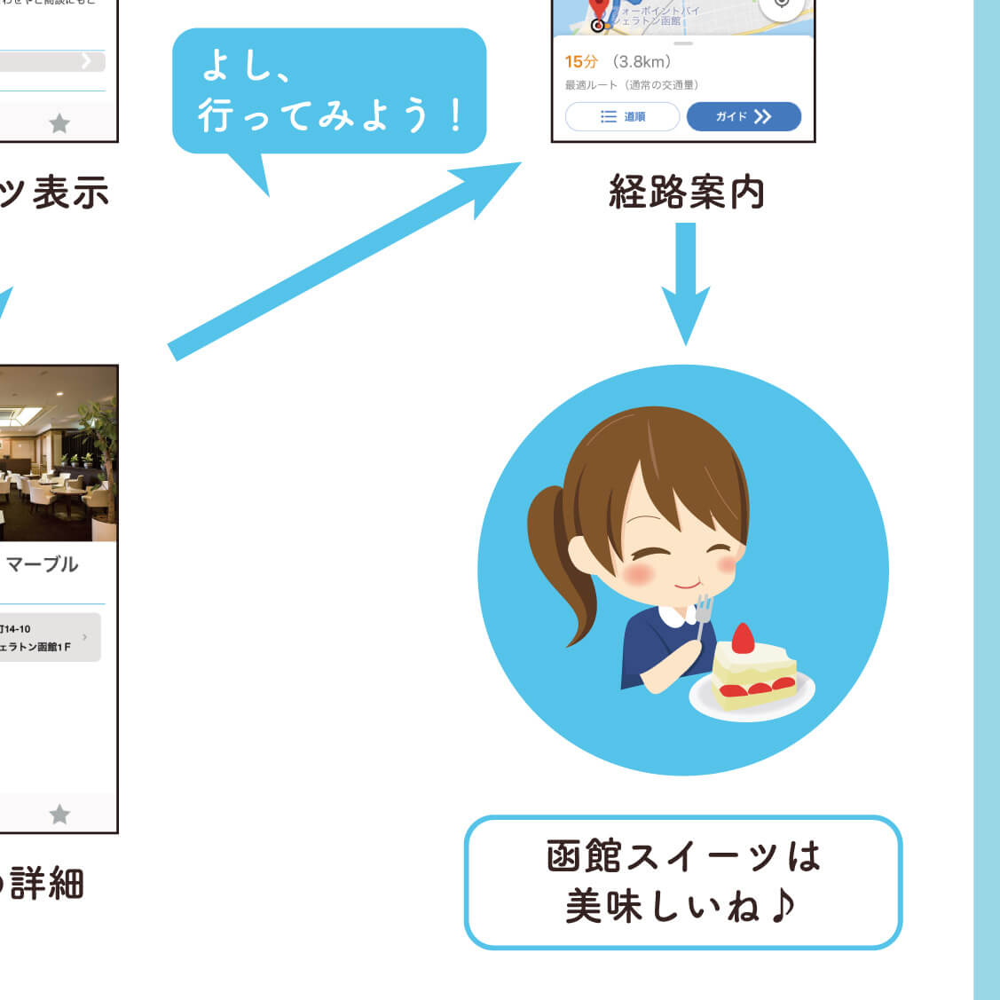
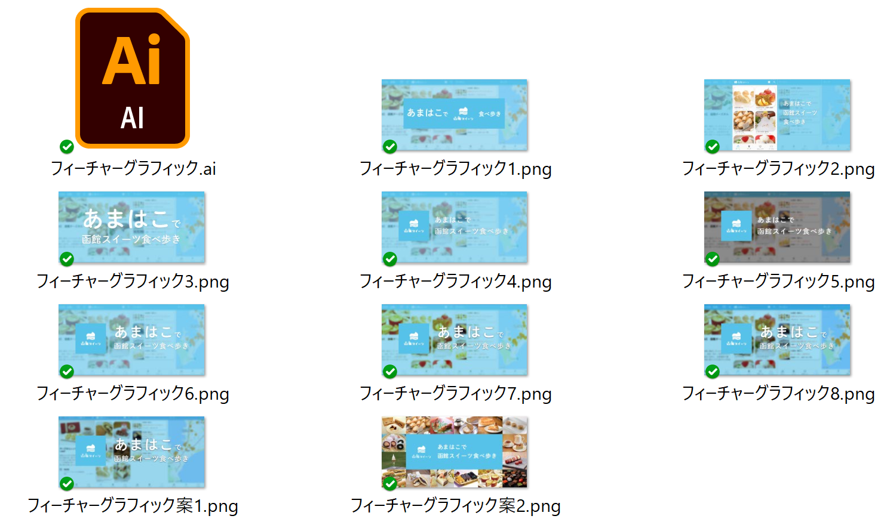
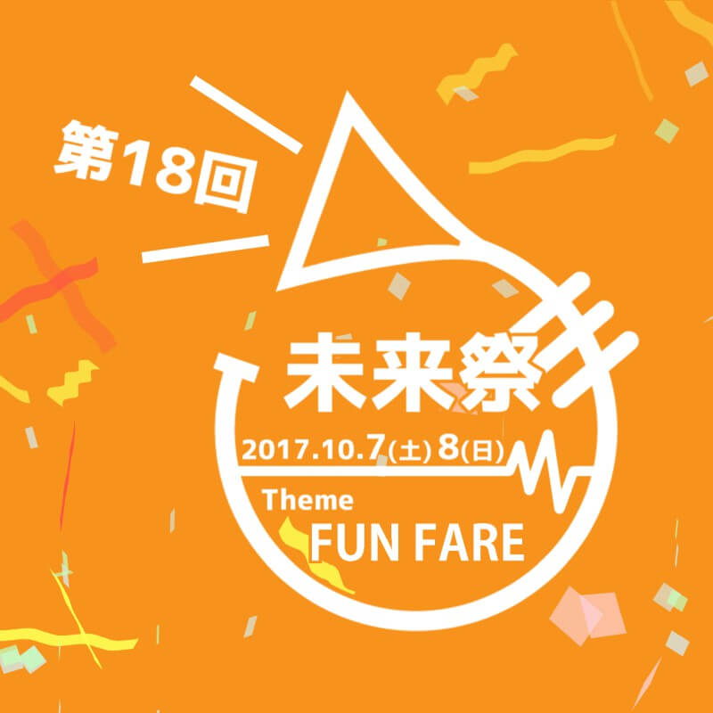

About me
ざっくりとした自己紹介のようなもの
林 友佳
Tomoka Hayashi
公立はこだて未来大学（未来大）に通う情報系女子（ジョジョ）。デザインからフロントエンドへ興味が移り、いつのまにかサーバサイドもやっていました。
現在は、何が自分に向いているのかを模索しながら、幅広くチャレンジするようにしています。
| 所属 | 公立はこだて未来大学大学院 システム情報科学研究科 高度ICT領域 博士前期課程（2020年4月入学） システムソフトウェア研究室（松原克弥研究室） |
| 研究テーマ （ざっくり） |
システム監視ツールのUI・UXデザイン検討 |
| 主に勉強していること | Android（Kotlin） JavaScript、SCSS UI・UXデザイン、システム監視など |
| 資格 | 応用情報技術者、TOEIC IP 775点など |
| 情報系に興味を持ったきっかけ | ゲームが好きだったことと、MSSPの動画で動画投稿サイトやインターネットに興味を持ったこと |
| 呼び名 | とも（か）ちゃん、はや（し|っ）ちゃん |
| 誕生日 | 1997年11月4日 |
| 趣味 | お絵かき、動画編集、フォントを眺めることなど |
| マイブーム | M.S.S Project（MSSP） |
Works
つくったもの・やったこといろいろ

高度ICT演習
2018.4 -
学年に関わらず、希望者がチームを組んで開発する「高度ICT演習」。私は函館のスイーツの魅力を広めることを目的としたチームで、Androidアプリの開発やポスターデザインをしています。
高度ICT演習
未来大のPBL演習活動の一つに高度ICT演習があります。高度ICT演習では、学部1年～修士2年まで、学年に関わらず希望者がチームを組んでプロダクト開発を行っています。高度ICT演習には、毎年複数のテーマがあります。
高度ICT演習の説明やテーマ一覧について
私は、はこだてSweets班というチームに所属しています。はこだてSweets班では、「観光のおともに、あまはこで函館の街を食べ歩き」をコンセプトとしたアプリ「あまはこ」の開発を主に行っています。私はAndroidアプリの開発チームに2018年度から加入し、学びながら開発に携わっています。さらに、2019年度からは、Android班のリーダーとなり、開発方針などについてメンバーと話し合ったり、函館スイーツ推進協議会の方々と打ち合わせをしたりしながら、楽しく無理なくかつ函館スイーツ推進協議会の方々の要望にできるだけ沿った開発を進められるようにしています。
2020年度には、とうとう初回版の リリースができました。私はリリースに際して、ストアへの情報登録や、フィーチャーグラフィックの作成を担当しました。リリースまでたどり着けたことは良い経験になりましたが、これはゴールではなくスタートですので、今後も開発を頑張っていこうと思います。
フィーチャーグラフィックの案を出す過程です。
最終的に決定したフィーチャーグラフィックです。
プロジェクト学習
2018.5 - 2019.2
未来大には、3年生が必ず参加する「プロジェクト学習」があります。私はビーコンを活用したアプリを開発するプロジェクトで、サーバサイドやポスターデザインを担当しました。
プロジェクト学習
未来大には、3年生が必ず参加する「プロジェクト学習」があります。私が所属していたプロジェクトは「ビーコンIoTで函館のまちをハックする」です。BLE
ビーコンを活用した新しいサービスを考案・実現することで、函館の課題を解決したり、函館に新しい価値をもたらしたりすることを目的として活動しました。私はプロジェクトのサブリーダーとしてリーダーの補佐を行うとともに、「Becoma」開発チームでサーバサイドを担当しました。残念ながらコードはお見せできませんが、未来大公式サイトに掲載されている成果発表ポスターをご覧いただければ、大まかにどのようなものを作ったかについてはわかるかと思います。
プロジェクト全体について
Becomaについて
サーバサイドは未経験だったため、最初は「curlってなに？」「Webページに文字しか表示されない状態でいいの！？」といった状態でした。なんとかRuby on Railsを1ヶ月半ほど学習し、2ヶ月半ほどの期間でREST APIを実装しました。自分はデザインに興味があったため、フロントエンド向きでサーバサイドは向いていないと思っていましたが、実際にやってみると思っていた以上に楽しむことができました。
また、プロジェクト全体を通して、デザインについても学びました。本を読みデザインの基本原則などについて理解を深めただけでなく、ツールを使いこなせるように努力しました。特に、Adobe Illustratorについては、プロジェクト開始時はペンツールを使うことすら下手でしたが、プロジェクト終了時点ではそれなりに使えるようになりました。先程の「プロジェクト全体について」リンク先にあるポスターは、3ページとも私が作成したものです。プロジェクトのイメージカラーである水色をベースに、全体的に統一感があり読みやすいポスターになるように工夫しました。
その他、細々したものとしては、Slack用のBotやアイキャッチ用の動画を作成しました。Botについては、毎時間の議事録担当を決めてSlackにお知らせしてくれる「minutesBot」と、トリガーワードを入力すると5人のオリジナルキャラクターのうち1人が、呼び出したメンバーを褒めてくれる「褒めBot」をGAS（Google Apps Script）で作成しました。Botのアイコンも自分で描き、とても愛着が湧くBotとなりました。
アイキャッチ用の動画は、最終発表の前日に思い立って作った動画です。各サービスのデザイン担当者が作成したロゴと、各サービスのキャッチコピーを借りて、ロゴのモチーフから想像した動きに組み込んでみました。メンバーや先生が気に入ってくださり、発表会の場面転換の際に上映していただきました。
minutesBotのアイコン。プロジェクトのロゴを考える際に、とあるメンバーが描いたイラストを基に、私が描き直したものです。
アイキャッチ動画。出てくるサービスの順番に深い意図はなく、動きが思いついた順です。
イベント運営
2019.2 -
有志によって開催されるLT大会やハッカソンなど、学内向けイベントの運営をしています。裏方仕事の楽しさや、参加している皆さんに楽しんでもらえたときの喜びがモチベーションとなっています。
イベント運営
有志によって開催される学内向けイベントの運営をしています。単純に裏方仕事的なものが好きでやっている部分もありますし、参加している皆さんに楽しんでもらえたときの喜びが快感でやっている部分もあります。また、学内イベントの参加者はどうしても男子学生のほうが多いため、私が運営をすることで、少しでも女子学生の参加ハードルを下げられたら嬉しいなと思っています。
LT大会は、地方学生である未来大生と首都圏の企業の方々との交流の機会を作ることと、未来大の技術系コミュニティを盛り上げることを目的に開催されました。私は、告知画像の作成などを担当しました。
ハッカソンは、主にプロジェクト学習を経験する前の学部1,2年生を対象とし、開発を楽しんでもらうことや、チームワークに慣れてもらうことなどを目的に開催されたものです。2年連続で運営に関わり、ポスター作成や公式サイト作成などを担当しました。また、運営に必要なカスタムレスポンスやSlackBotを作成しており、その内容はGitHubリポジトリに残しています。2年目の取り組みは、大学公式サイトにも掲載されています。
作成したLT大会の告知画像。春らしく未来大らしい画像を作成しようとしたときに、たまたま自分が撮っている「未来大写真コレクション」の中にいい写真があったので加工して使いました。
私が関わった2回目のハッカソンのために作成したバーチャル背景。コロナ禍のためオンライン開催になり、「スタッフジャンパーなどを作成しない代わりに一体感が欲しい」ということになり作成しました。
LATTE
2021.2 -
ビーコンプロジェクトOB/OGの有志と先生で、新型コロナウイルス感染症対策のために、学内向けのアプリ「LATTE」を開発しています。私は主にUIやグラフィックデザインの面でお手伝いしています。
LATTE
ビーコンプロジェクトOB/OGの有志と先生からなる「ESPRESSOプロジェクト」で、新型コロナウイルス感染症対策のために、学内向けのアプリ「LATTE」を開発しています。ちなみに、ESPRESSOはEasily Seek and Positively Record Staying Spots On-campusの略で、LATTEはLocation-Aware Tagger for Tracking Encountersの略らしいです。私は主にUIやグラフィックデザインの面でお手伝いしています。
最初にお声がけいただいたのは、アプリアイコンのデザインでした。先生が描いたラフをもとに、案を作ってはこまめに共有し、最終的には2つの案ができました（画像内の大きいもの2つ）。ラテアートを強調したデザインが採用されることになりましたが、どちらもLATTEという名前からイメージするラテアートと、位置情報を記録するという特徴を反映したお気に入りのアイコンです。
アイコンのラフや制作過程のボツ案。モチーフはほぼ変わっていませんが、だんだんシンプルにできている…といいな…という感じです。
学内に告知するための画像も作成しました。告知画像は、学内メールへの添付やポスターとして学内に貼るなどの用途で使われます。LATTEのアイコンのイメージを崩さず、親しみやすいイメージを持てるように作成しました。楽しい・面白い・普段から便利といったアプリではないので、とにかく気軽に使用できるという面をアピールし、インストールのハードルを下げることも意識しました。
告知画像のラフや制作過程のボツ案。なかなか別々の案が思いつかず、ほぼ似たようなデザインばかりになってしまったことが反省点です。
ちょっとしたデザイン
高度ICT演習やイベント運営以外の場面でも、時々グラフィックデザインやUIデザインを引き受け、作りながら学んでいます。下記の画像以外には、とある先生の家の表札をレーザープリンター+アクリル板で作ったこともあります。
ポートフォリオサイトのデザイン案のひとつです。自分のノートパソコン、スマートフォン、ペンタブレットをイラストで再現して使おうとしていました。（引っ越しして自分のリアル作業環境の写真が気に入ったため、方向転換しました。）
LOCALという団体の10周年記念パーティの名札を作りました。「未成年と成年をすぐに見分けられるように、広い範囲を塗りつぶしたりデザインを分けてほしい」との要望を受け、ラフなパーティのイメージで作成しました。
友達が思いついたアプリのアイデアに合わせて作成したスイッチのデザインです。（なおアプリはお蔵入り）
メディアデザイン領域の講義のテーマで「自分の視点ならではの図鑑をつくる」という物がありました。私は別の領域の学生ですが、興味があったので受講し、下の句かるた図鑑を作りました。（全8ページはこちらのツイートで見ることができます。）
ARTiS
2020.1 -
クリエイティブコーディングを行うARTiSというサークルに所属しています。公式サイトを制作したり、Processingやp5.jsでアートをのんびり作ったりしています。
ARTiS
クリエイティブコーディングを行うARTiSというサークルに所属しています。クリエイティブコーディングとは、コーディングによって創造的な表現を生み出す創作活動のことです。同級生の友人に誘われ、設立からの初期メンバーとして活動しています。
公式サイトは、メンバーにサイトのイメージを挙げてもらったり、時々意見をもらったりしつつ、制作しました。制作の際には、作品が主役となることと、後輩たちが今後編集していくことを踏まえ、難しい技術の使用やわかりにくい書き方はしないことを意識しました。
作品は主にProcessingを用いて作成しています。デザインというよりアートですので、思いついたときに自由に作成できる点が魅力です。最新の作品はこちら（Twitter検索結果）から見ることが出来ます。また、一部の作品のソースコードは、GitHubやNEORTで公開しています。
自作キーボード/自作PC
モチベーションを上げるために、「可愛い作業環境/ガジェット」を揃えるようにしています。そこで、Twitterで見かけた自作キーボードを作ってみたり、キーキャップを揃えてみたりしました。また、研究に使用するPCとして、パーツ選定は指導教員であるものの、自作PCにも挑戦しました。
研究室の企画で、2, 3年生向けに自作キーボード/自作PCをゆるくおすすめするLTも行いました。
とにかくカワイイPCとキーボードを作った話
第17回未来祭
2016.4 - 2016.10
1～2年生の時には未来祭実行委員会に所属していました。2016年度の未来祭（大学祭）では、新設された広報セクションのメンバーとして、告知動画を作成しました。
第17回未来祭
1～2年生の時には未来祭実行委員会に所属していました。2016年度の未来祭（大学祭）では、新設された広報セクションのメンバーとして、告知動画を作成しました。
ロゴのイメージを基に、曲を選んだり動きを決めたり…また、サークルの動画である以上、自分だけで決めるわけにはいかないので、動画編集に詳しくない人の意見も聞きました。それまであまりモーショングラフィックスは作ったことがなかったので、悩む場面が多々ありましたが、最終的には自分自身納得いくものができてとても嬉しくなりました。
第17回未来祭告知動画。ロゴの円から動きを連想し、カラフルでポップな印象の動画にしました。

第18回未来祭
2016.11 - 2017.10
2017年度の未来祭では、広報セクションのリーダーとして、様々な活動に関わりました。 主に制作したものは、告知動画と公式サイトなどです。
第18回未来祭
2017年度の未来祭（大学祭）では、広報セクションのリーダーとして、いろいろな活動に関わりました。主に制作したものは、告知動画と、公式サイトなどです。
サイト制作は0からのスタートで、さらに時間がなかったこともあり、大変苦労しました。
告知動画は2016年度と同じように作成しましたが、ロゴやイメージカラーがシンプルだったので、そこからどう連想して動きをつけるかに苦労した記憶があります。
第18回未来祭告知動画。テーマに合わせてファンファーレから始まり、「ワクワクするお祭りが始まるぞ！」という高揚感が出せるように作りました。
ほかには、新入生勧誘のビラ、NCV（ケーブルテレビ）で表示していただいた広告画像、サイトトップの動画も私が作成しています。

NCVの広告画像。このような画像を作る機会はこれまでなかったので、どのような情報を載せるべきか悩みました。

MikuMikuDance
趣味でMikuMikuDance（MMD）というフリーソフトを使った動画・静止画制作をしています。
現状は配布されたモデルやモーションを使用することが多く、エフェクトの使い方やカメラアングル、動画編集で他の動画と差別化を図っています。いずれはモデルやモーション、エフェクトの作成にも挑戦したいと思います。

Movies
MMD以外では、モーショングラフィックスやストップモーション、タイムラプスの動画も作ることがあります。 ストップモーションはサークルや部活で共同制作したものが多く公開が難しいので、個人で作成したモーショングラフィックスとタイムラプスを公開します。
未来祭の告知動画もモーショングラフィックスの類ですが、そちらは題材や目的がはっきり決まっているので、その制約が良い影響にも悪い影響にもなります。趣味で作るモーショングラフィックスの動画は制約がないので、とても自由な反面、何を作っていいか迷子になりがちです。そういうわけで、まだあまり作ってはいませんが、自分のペースで作れるところが魅力だと思うので、ぜひこれから作品を増やしていきたいです。